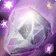

Le Prêtre est exclusivement une classe de lanceur de sorts. Il est efficace en monocible, mais pas en multicible. Il fait des dégâts avec des sorts de type Ombre et Sacré et des soins de type Sacré.
C'est une classe assez fragile, mais qui possède de nombreux atouts pour prendre le dessus sur ses adversaires. La particularité de la spécialité Discipline réside dans sa survie qui est bien supérieur à celle des autres spé et à l'augmentation de ses caractèristiques et de ses soins.
En PvP c'est une spécialisation moyennement dur à jouer, car cette classe n'a pas trop de survie, mais par contre possède de quoi dominer un adversaire.
Elle est très utile en bg, très opti pour de la 2c2 en arène et très adapté pour de la 3c3 ou 5c5 de part ses controles qu'elle peut offrir.
LES SORTS LES PLUS UTILISÉS
De soutiens
 Rénovation (Soin sur la durée)
Rénovation (Soin sur la durée) Soins rapides (Le flash heal)
Soins rapides (Le flash heal) Feu intérieur (Augmente l'armure)
Feu intérieur (Augmente l'armure) Protection contre l'Ombre / Prière de protection contre l'Ombre (Augmente la résistance au sorts d'ombre)
Protection contre l'Ombre / Prière de protection contre l'Ombre (Augmente la résistance au sorts d'ombre) Abolir maladie (Enlève un effet de maladie)
Abolir maladie (Enlève un effet de maladie) Prière de soins (Soigne tout votre groupe, pas très utile en PvP, à part peut être en bg et encore...)
Prière de soins (Soigne tout votre groupe, pas très utile en PvP, à part peut être en bg et encore...) Soins (heal bas niveau, utile quand on a plus de mana)
Soins (heal bas niveau, utile quand on a plus de mana) Silence (Suivant votre spé, Réduit au silence la cible)
Silence (Suivant votre spé, Réduit au silence la cible)De dégâts
 Flammes sacrées (Dégâts direct et DoT)
Flammes sacrées (Dégâts direct et DoT) Brûlure de mana (efficace pour rendre un ennemi sans mana)
Brûlure de mana (efficace pour rendre un ennemi sans mana) Mot de l'ombre : Douleur (DoT)
Mot de l'ombre : Douleur (DoT)Rappel : Un cap par définition c'est la valeur à partir de laquelle vous n'avez plus aucun intérêt à monter une statistique.
Expliquées par ordre de priorité :
Le Bonus aux Soins
C'est une stat importante qui va monter vos sorts de soins. Cette stat n'a pas vraiment de cap. Vous allez la monter à la fois avec le stuff, les enchantements et les gemmes. Vous pouvez aussi ajouter un bijoux qui monte votre bonus aux soins.
Avec 1200 de bonus aux soins vous commencerez à être un vrai "heal". Avec 1600 de bonus aux soins vous commencerez à être bien.
La résilience
Cette stat est importante en PvP. Elle diminue les dégâts des sources de dégâts périodiques (DOT) et les chances de recevoir un coup critique. Diminue aussi les effets des drains de mana et les dégâts des coups critiques.
Pour faire simple le cap de la résilience est de 492.5, au dessus de 500, la résilience ne diminue plus les chances de recevoir un coup critique (diminué de 25% au max). Mais il n'y a pas de cap résilience pour la diminution des dégâts des DOT.
Il vous faudra 400 de résilience minimum pour déjà commencer à bien encaisser. Vous pouvez mixer avec le stuff du Prêtre ombre (2 pièces, épaules et jambes sont le plus rentable) pour avoir le bonus du set (+35 résilience) et ainsi gagner légèrement en dps, mais ce n'est qu'une option.
Rappelons que le Prêtre Disci en PvP, est là pour être agressif au controle (voir dps) pas simplement pour heal donc ce petit bonus de dégâts des sorts en plus ainsi que 35 resilience en plus peuvent être utile.
L'endurance
C'est la Stat de la survivabilité, assez importante en PvP. à monter en second plan à la fois avec le stuff mais aussi avec quelques enchantements si c'est possible. Niveau gemmes vous pouvez en mettre, si vous avez assez à votre gout de Intel / Esprit
Il ne faut pas non plus trop la monter, à partir de 10k PV, vous en aurez assez. Vous pouvez monter au max à 11K.
L'intelligence
Une stat de base plus ou moins utile, c'est la stat que vous monter avec votre stuff et gemmes (enchantement est un choix pas forcement obligatoire).
Vous pouvez monter jusqu'à 11k mana max, ce qui va vous permettre déjà d'être à l'aise, mais 10K suffisent.
L'esprit
Stat utile, c'est ce qui fera votre survie en terme de mana sur le long terme. Ce n'est pas une stat à prioriser par contre, car si vous êtes sans mana, il vous suffit de regen en hors combat. Si vous êtes en combat et sans mana, il y a l' Ombrefiel.
C'est donc une stat à up avec le stuff, et quelques gemmes si vous ne montez pas l'intelligence.
Le toucher des sorts
Tout d'abord il faut comprendre que le toucher des sorts vous permet d'éviter "les ratés" quand vous lancer un sort (à ne pas confondre avec la pénétration des sorts).
En PvP contre une cible de même niveau vous devrez "théoriquement" avoir 4% de toucher des sorts. Mais le cap est néanmoins de 3%, car il y a 1% "incompressible", c'est à dire pas nullifiable via spellhit/talent/buff/etc... En heal vous êtes amené à dps peu, donc le score de toucher n'est qu'une stat optionnelle, et il ne vous est pas obligé de devoir la up.
La pénétration des sorts
Cette stat ci comparé au toucher des sorts, évite les résistes adverse. C'est à dire que plus vous avec du score de pénétration, moins l'ennemi va "résister" à vos sorts.
Peu de joueurs ont une grosse résistance à l'ombre et au sacré, inutile donc de trop monter cette stat. Il y a l'enchant sur cape de 20 pénétration qui suffit à vos besoins.
Autant dire que cela suffit, car il n'y a pas de "cap" à proprement dit. Inutile donc de gemmer pénétration des sorts.
Le critique des sorts
C'est la stat qui n'est pas rentable pour un prêtre, car vos heals sont majoritairement sur la durée, donc pas prit en compte par le critiques des sorts, ce qui le rend useless. Inutile donc de gemmer / enchant critiques des sorts pour un Prêtre Discipline. Sachant qu'en plus vous gagnez en critique déjà avec l'intelligence.
Le score de hate des sorts
C'est ce qui vous réduit le temps d'incantation des sorts
Cette stat est utile au bout de 200 au score de hate, en dessous, cette stat est inutile. Si vous avez un stuff full PvP, atteindre ce score est carrément impossible, même en étant full gemmé et enchant hate. (vous atteindrez environ 140 au score de hate des sorts max)
Il vous faut pour le coup du stuff PvE obligatoirement pour arriver à avoir ce score de hate. Il n'y à pas vraiment de cap en heal.
Ici ce n'est pas notre objectif, car on a besoin de résilience pour pouvoir encaisser, donc cette stat si vous pouvez en avoir ne dites pas non, sans trop changer la valeur des autres caractéristiques. Inutile donc de gemmer et / ou enchant hate des sorts, car vous sacrifierez d'autres stat plus importante.
Sachant qu'en plus vos heals et vos sorts, sont quasi tous instantanée et sur la durée, ça nous vous servirait à rien... La hate c'est bien, mais ça bouffe la mana à une vitesse affolante, donc gardez bien à l'esprit qu'il faut bien équilibrer cette stat avec d'autres, en particulier l'intelligence ou l'esprit.
 L'arbre de talent
L'arbre de talentAvant de commencer vous pouvez voir les talents prêtre sur ce site
Les points importants dans la spé Discipline sont :
 Volonté inflexible
Volonté inflexible Méditation Brûlure de mana améliorée
Méditation Brûlure de mana améliorée Force mentale Rénovation améliorée
Force mentale Rénovation amélioréeSpé heal
Spé Disci ombre
Silence (Suivant votre spé)Vous pouvez cliquer sur les images pour les agrandir.
Disci sacré
2.png)
Disci + Ombre : Fouet mental et cri psychique amélioré
2.png)
Disci + Ombre : Fouet mental + cri psychique amélioré + Silence

Variante

Disci + Ombre : Fouet mental + cri psychique amélioré + Silence + Etreintre vampirique

Disci défensif 3v3

Variante
2.png)
Disci défensif et assist dps

Disci heal offensif

Disci spé spam Nova sacrée

Disci dps (smiter : stuff dps)

Pour ce qui est des enchants et gemmes, en gros il vous faut du Bonus aux soins, de l'esprit / intelligence, de l'endurance et de la résilience ! Car je le rappel encore, vous faites des soins sur la durée.
 Diamant tonneterre de puissance : +18 Endurance et 5% de résistance aux étourdissements
Il vous faut 3 gemmes bleues pour pouvoir l'activer
Diamant tonneterre de perspicacité : +12 Intelligence et une chance de restaurer des points de mana au lancement d'un sort (+300 mana)
Il vous faut 2 gemmes rouges, 2 gemmes jaunes et 2 gemmes bleues pour l'activer
Par ordre de priorité
Casque
Arcanum du gladiateur (+18 Endurance et +20 au score de résilience) Réputation Opération Soleil brisé Amical.
Arcanum du renouveau (+35 aux soins, +12 dégâts des sorts, +7 points de mana toutes les 5 sec.) Réputation Thrallmar / Bastion de l'honneur Révéré.
Epaules
Calligraphie superieures de discipline (+33 aux soins, +11 dégâts des sorts, +4 points de mana toutes les 5 sec.) Exalté Aldor
Calligraphie supérieure de l'orbe (+22 aux soins, +6 points de mana toutes les 5 sec.) Exalté Clairvoyant
Calligraphie de discipline (+29 aux soins, +10 dégâts des sorts) Honoré Aldor
Calligraphie de l'orbe ou de l'oracle (+13 score de critique des sorts ou +5 points de mana toutes les 5sec.) Honoré Clairvoyant
Torse
Résilience majeur (+15 Résilience)
Pts vie exceptionnels (+150 point de vie)
Carac. exceptionnelles (+6 à toutes les caractèristiques)
Brassards
Soins excellents (+30 aux soins, +10 dégâts des sorts)
Robustesse (+12 Endurance)
ou à la limite Intelligence majeure (+ 12 Intelligence)
Cape
Pénétration des sorts (+20 Pénétration des sorts)
Armure majeure (+120 Armure)
ou à la limite Résistance majeure (+7 à toutes les résistances)
Jambes
Craft par un Couturier
Fil ensorcelé doré (+66 aux soins, +22 dégâts des sorts, +20 Endurance)
Fil ensorcelé argenté (+46 aux soins, +16 dégâts des sorts, +15 Endurance)
Gants
Soins majeure (+35 aux soins, +12 dégâts des sorts)
Pieds
Vitesse du sanglier (+9 Endurance et augmentation de la vitesse de course)
Robustesse (+12 Endurance)
Bagues
Si vous avez enchantement
Pouvoir de guérison (+20 aux soins, +7 dégâts des sorts)
Arme
Soins majeure (+81 aux soins, +27 dégâts des sorts), le must have pour tous healer.
Légende :
[Button:1] = bouton gauche de la souris
[button:2] = bouton droit de la souris
[nomod] = bouton par défaut du clavier
[mod:alt] = alt + le bouton par défaut
[mod:shift] = shift + le bouton par défaut
[mod:ctrl] = controle + le bouton par défaut
Ces macros sont adapté pour quelqu'un qui joue à la souris, mais vous pouvez les adapter à votre sauce par exemple :
Avec Nova sacrée, version à la souris
Bouton gauche Nova sacrée rang max, bouton droit Nova sacrée rang 1.
Version bind clavier :
[Touche par défaut] Nova sacrée rang max, Alt+[touche par défaut] Nova sacrée rang 1.
Pour un raccourci clavier il faut indiquer [nomod] pour la touche par défaut, et vous pouvez remplacer alt pour autre chose sur la deuxième ligne.
Notez aussi que si vous ne mettez aucun rang de sort, le rang maximum sera utilisé.
Dispel
Bouton gauche vous permet de dispel un ami ou ennemi, si vous rappuyez avec alt cela lance Dissipation de la magie sur vous, même avec une cible en target. Bouton de droite lance Dissipation de masse qui dispellera une bubule d'un paladin ou le Bloc de glace d'un mage.
Focalisation améliorée
Utilise dans les deux cas, Focalisation améliorée. Bouton gauche lance en plus Attaque mentale ce qui permettra de peut être faire un coup critique. bouton droit lance un soins sup, si vous arrivez à vous cachez ou si vous n'avez plus de mana et de vie, ça peu sauver.
Silence et Focus
Bouton de gauche lance silence sur votre cible actuelle. Bouton de droite lance Silence sur votre focus en le ciblant puis en revenant sur votre ancienne cible.
Soins rapide et Soins de lien
Bouton gauche lance Soins rapides, si vous appuyez sur alt le sort se lance sur vous même si vous avez une cible. Bouton droit lance Soins de lien sur le premier membre du groupe (vous pouvez mettre le pseudo d'un ami), utile si un ami et vous même avez besoin d'un heal. Party1 cible le premier mate de votre groupe, utile en 2c2.
Dispel un mate
Macro indispensable en arène, ou si vous jouez avec un mate en BG. La macro permet de cibler votre ami et de lui dispel un sort magique (Comme un DoT de démo, un fear, un glaçon d'un chasseur, ect...), puis de vous faire revenir sur votre ancienne cible. Inutile de le cibler pour lui dispel un sort avec ce type de macro.
Macro plus simplifié pour 2c2, vise votre mate peu importe son nom.
Mot de pouvoir : Bouclier
Bouton gauche vous applique un Mot de pouvoir : Bouclier, si vous appuyez sur alt et ciblez un ami, le sort se lance automatiquement sur vous. Bouton de droite cible votre ami et lui lance un Mot de pouvoir : Bouclier, sans que vous ayez à le cibler et sans perdre votre cible actuelle.
Macro plus simplifier pour 2c2, vise votre mate peu importe son nom. Remplacez cette ligne par toutes les lignes avec "[button:2]"
Ombrefiel
Vous permet de faire pop l'Ombrefiel plus vite et directement sur la cible. Bouton gauche envoie l'Omrefiel sur votre cible actuelle. Bouton droit envoie l'Ombrefiel sur votre focus en le ciblant.
Suppression de la douleur
Bouton gauche vous applique un Suppression de la douleur, si vous appuyez sur alt et ciblez un ami, le sort se lance automatiquement sur vous. Bouton de droite cible votre ami et lui lance un Suppression de la douleur sans que vous ayez à le cibler et sans perdre votre cible actuelle.
Mot de l'ombre : Mort
Lance Mot de l'ombre : Mort sur la cible ou sur la cible d'une cible amie si vous avez une. Très utile pour éviter un sheep, ou un cécité. A lancer juste avant de se faire controle, ce qui permet de s'en délivrer.
Totems
Pour tuer un totem de chaman sans devoir le cibler.
Totem de Séisme
Pour casser un totem de Séisme sans devoir le cibler, juste avant un fear, et éviter ainsi que l'ennemi sorte de votre fear.
Macro anti-rogue/feral
Vous pouvez la spammer dès que vous voyez un fufu en camouflage, la macro va vous permettre de cibler le premier ennemi et de lui appliquer un Mot de l'ombre : Douleur
 Haut de page
Haut de page